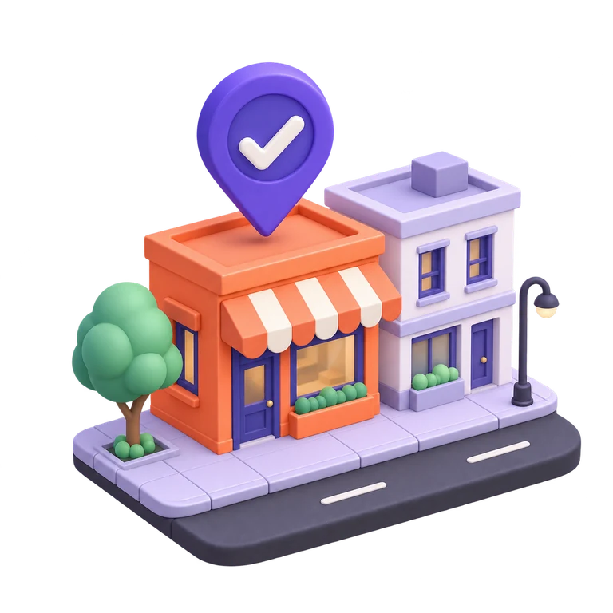
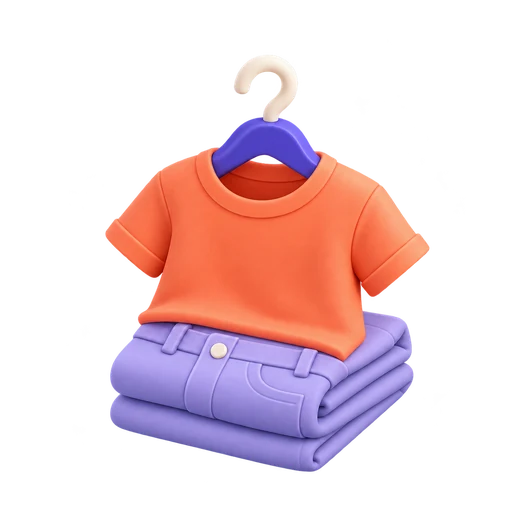
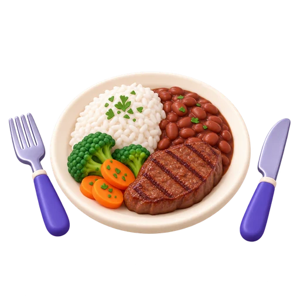

Conte do seu negócio
Escolha um dos 15 segmentos (ou descreva o seu nicho) e informe ticket médio, margem, equipe, aluguel, horários e o público que quer atender.
O SpotLocal estima, rua por rua, quantos clientes por dia, quanto faturamento e quanto sobra no fim do mês para o seu pequeno negócio, nas 27 capitais, com dados públicos.
Sem cadastro. Seus pontos ficam no seu navegador.

O problema
Quem abre uma padaria, uma barbearia ou uma loja costuma decidir o endereço por intuição, por uma visita num horário qualquer ou pelo anúncio que apareceu primeiro. E o Brasil nunca abriu tantas empresas.
empresas abertas em 2025, recorde histórico. 96% são pequenos negócios.1
das empresas nascidas em 2017 ainda funcionavam cinco anos depois.2
dos negócios de comércio fecham em até cinco anos, a maior taxa entre os setores.3
O ponto não é a única causa de fechamento, mas é a decisão mais difícil de desfazer: contrato de aluguel de anos, reforma, clientela que se forma num lugar só.
Os números acima vêm de pesquisas com métodos diferentes (o IBGE acompanha empresas com registro; o Sebrae separa MEI, micro e pequenas empresas). Por isso não se somam nem se comparam diretamente.
Como funciona
Escolha um dos 15 segmentos (ou descreva o seu nicho) e informe ticket médio, margem, equipe, aluguel, horários e o público que quer atender.

No mapa, compare bairros por oportunidade, renda, densidade e concorrentes. Cada rua com comércio vira um ponto colorido pelo veredito.

Clientes por dia, faturamento, custos e saldo em três cenários, projeção dos primeiros 24 meses, movimento por hora e uma rua animada em 3D. Salve, compare até três pontos e baixe o relatório em PDF.
O que já existe
Não é uma maquete: a base de dados já cobre as 27 capitais e funciona no celular.
Exemplo de resultado


Telas reais do app, para uma loja de moda masculina de exemplo na Av. Conselheiro Rosa e Silva (Graças, Recife). Os valores mudam com os números de cada negócio.
De onde vêm os dados
Moradores, renda e idade por setor censitário, somados num raio de 400 m em volta do ponto.
Empresas ativas por rua e por ramo, e quantas abriram e fecharam desde 2024. A posição no mapa é aproximada a partir do endereço.
Ruas, escolas, faculdades, hospitais, shoppings, galerias e parques que aumentam o movimento por perto. © colaboradores do OpenStreetMap.
Preço do metro quadrado, usado como ponto de partida para o aluguel quando você não informa o valor real.
Por isso o app mostra faixas, um nível de confiança por cidade e a aba "Dados e premissas" com cada número usado. Confira o ponto pessoalmente antes de decidir.
Validação
Ticket médio de R$ 230, 3 funcionários, 30 m². Comparamos o que o modelo previa com o faturamento real informado pelo dono.
O cenário provável do modelo ficou em ~R$ 110 mil por mês; a faixa completa vai de R$ 57 mil a R$ 140 mil. Esta loja também foi usada para conferir a calibração do ramo de moda. É um caso só: bom sinal, não prova. Estamos procurando mais negócios dispostos a comparar os números.
Para quem é
Compare ruas antes de assinar contrato e saiba quanto de aluguel o negócio aguenta.
Mostre a quem procura um ponto comercial o potencial de cada imóvel, com números.
Leve até seus anúncios quem já está decidindo o bairro e o tipo de negócio.
Uma primeira conta de viabilidade para levar ao cliente antes da abertura da empresa.
Triagem de praças e bairros para novas unidades nas capitais.
Parcerias
Quem usa o SpotLocal já escolheu o ramo, o bairro e quanto pode pagar de aluguel. É o momento exato de ver um imóvel.
Hoje
Mapa, veredito, análise completa, projeção de 24 meses, simulador, clientes virtuais, relatório em PDF e comparação de pontos, sem cadastro e sem pagar nada.
Próximo passo
Comparar o modelo com o faturamento de mais lojas, em mais ramos e cidades, e publicar o resultado.
Depois
Para contadores, corretores e consultores que analisam vários pontos por mês.
Escolha a cidade, conte do seu negócio e veja o veredito. Leva poucos minutos e não pede cadastro.
Experimentar grátis